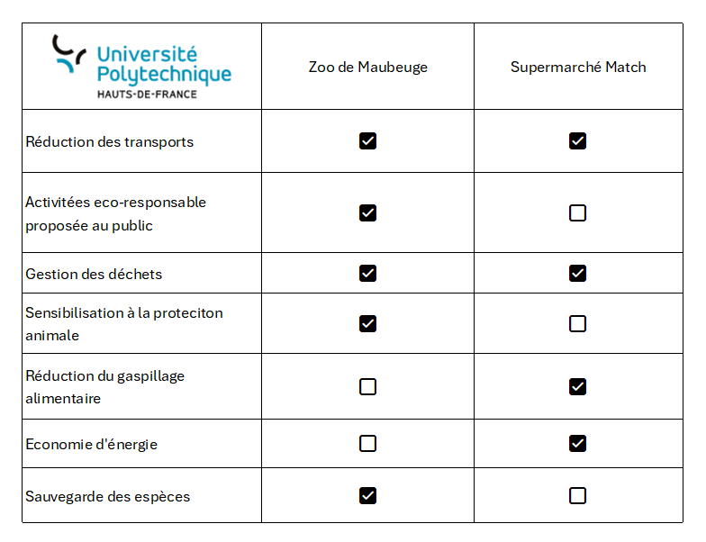
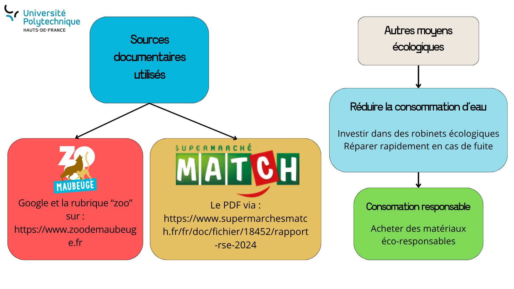

Éco Vert
Accueil
1 · Présentation
2 · Démarche
3 · Empreinte écologique
4 · Charte
5 · Présentation interactive
Empreinte écologique
Clément Bailly
Tableau
Carte mentale
Les différentes actions écologiques mises en place par le zoo de Maubeuge et Supermarché Match

Carte mentale
